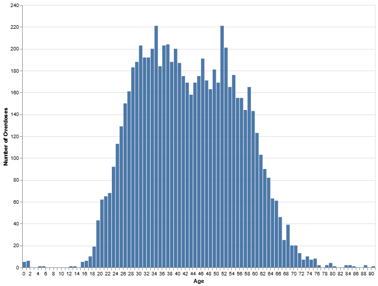
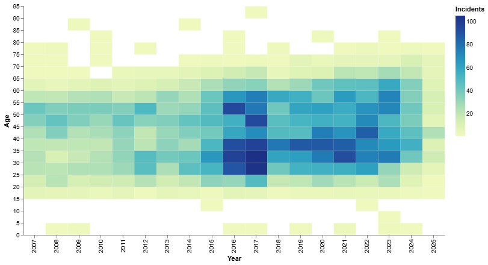
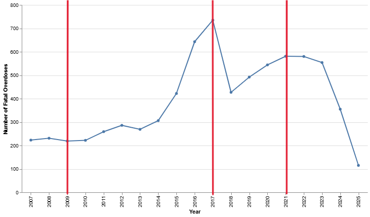
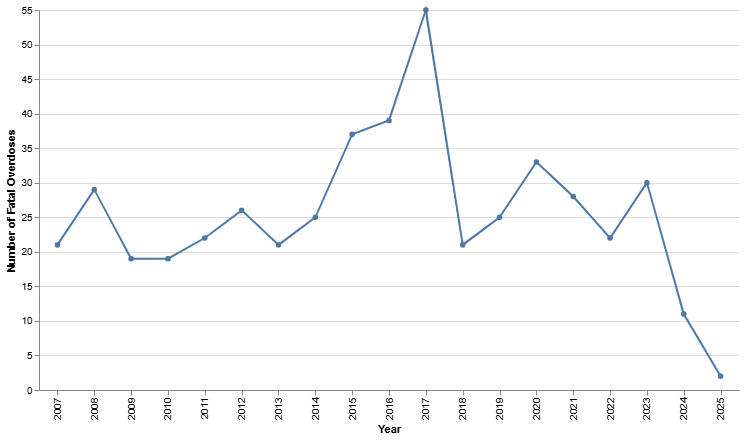
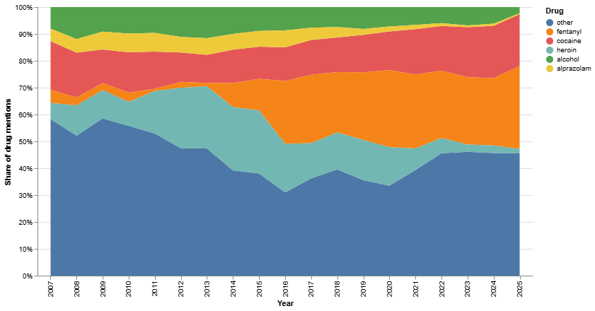
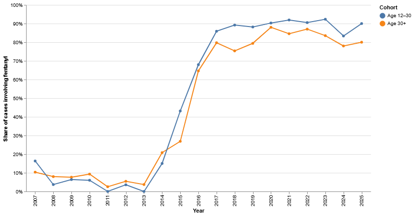
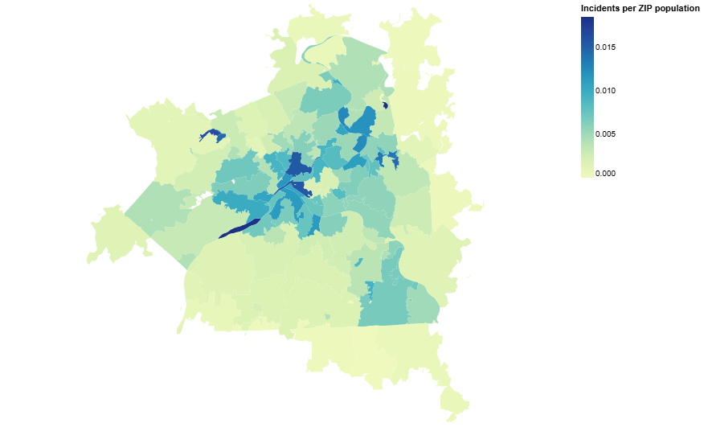

Subtheme: Allegheny County Fatal Accidental Overdoses Analysis
Data Overview
The first column that the dataset contains is _id which appears to be large integers sorted according to the number of combined overdose substances associated with each case then alphabetically, which lacks reasons to research deeper into. Each record also contains a precise death_date_and_time in the format YYYY-MM-DDTHH:MM:SS, accurate only to the minute, even though seconds were included in 00s format. The manner_of_death column is consistently classified as an accident, thus no need to research further. Column age represents patients’ age of death as integer values, while column sex is categorized into male and female. The race column includes singular letter (with occasional blanks) and based on assumption, they are abbreviations: A (Asian), B (Black), H (Hispanic), I (Indigenous), M (Mixed), O (Others), U (Unknown), and W (White). The base_dispo field is less clear but seems consistently marked as “M”. A series of combined_od columns (combined_od1 to combined_od10) list the substances present in each case, with up to ten possible entries, such as heroin, fentanyl, or other drugs. The incident_zip field records the location of the overdose, and while many entries are Allegheny County ZIP codes (15001 to 152XX), others extend beyond, suggesting cases may involve residents or incidents outside the county. And decedent_zip column remains blank. Finally, case_year provides the year of death, extracted directly from the death date field.Overall Analysis Questions
-
What age groups are most affected?
Keyword:
AGE
Motivation:
Based on my intuition and conversations with friends, I initially believed that younger generations in recent years are more likely to consume substances and therefore experience more overdose cases. I thought this might be because they sometimes care less about long-term health and tend to be less responsible compared to older adults. However, initial research and recent news reports suggest otherwise, showing declines among younger groups. This contrast between personal expectations and reported trends motivated me to explore how age groups are actually affected in the data.
Source:
Drug deaths plummet among young Americans as fentanyl carnage eases -
Are we experiencing a decreasing amount of incidents over the years?
Keyword:
CASE_YEAR
Motivation:
Policy shifts over the previous two U.S. presidencies have been significant, ranging from criminal justice approaches to public health initiatives. I wondered whether these policy changes would be reflected in the overdose data over time. My curiosity is to see if the trends in Allegheny County match the national reports of decline in overdose deaths, or if local patterns diverge from the broader narrative.
Source:
CDC Reports Nearly 24% Decline in U.S. Drug Overdose Deaths -
What drugs appeared more often in fatal overdoses?
Keyword:
COMBINED_OD
Motivation:
Fentanyl is often described as being up to 100 times more potent than morphine, and news outlets and agencies have repeatedly emphasized its role in the overdose crisis. I want to analyze how often fentanyl appears in overdose cases compared to other substances, and whether its presence has indeed translated into more fatal outcomes. This will help me understand how much of the overdose crisis is being driven by fentanyl relative to other drugs.
Source:
CBP: America’s Front Line Against Fentanyl -
Are there patterns by region (urban vs. rural ZIPs) in terms of fatal overdoses?
Keyword:
INCIDENT_ZIP
Motivation:
My assumption is that urban areas would record more overdose cases, as substances may be more readily available there through both legal and illegal channels. Urban regions also typically have greater access to hospitals, which could mean overdoses are more likely to be documented. Exploring this question allows me to see if overdose incidents are concentrated in the city of Pittsburgh or if rural areas of Allegheny County are equally affected.
Source:
Pattern of Substance Abuse in Rural, Urban Areas Differs
Discoveries & Insights
Distribution of Fatal Overdoses by Age
Distribution of Fatal Overdoses by Age and Year
Distribution of Fatal Overdoses Over Time
Distribution of Fatal Overdoses among teens (Age 12 - 24) Over Time
Share of Drug Mentions in Fatal Overdoses
Share of Cases Inolve Fentanyl in Fatal Overdoses
Distribution of Fatal Overdoses by ZIP Population
Source of geojson of Allegheny County: Allegheny County ZIP Boundary
Summary
Through this exploratory analysis of Allegheny County's fatal overdose dataset, I found several important insights. First, the age distribution revealed that adults between ages 25 and 60 are the most affected group, with peaks around the late 30s to mid-50s, making it different from a classic bell curve. With a closer look by year, I uncovered that peaks intensified around 2017, a year that stood out as a turning point across most of my following data analysis. When examining trends over time, total incidents surged dramatically leading up to 2017, followed by a sudden decline and some sorts of recovery in the following years. This pattern might be caused by policy changes, as these extreme changes occurred during / after U.S. president elections. Further analysis of specific drugs among those cases confirmed my assumption of fentanyl’s dominance, which started in 2014 and remained high in terms of participation in all of those cases. If we break down fentanyl’s usage by age groups, we are able to see that both younger (12-30) and older (30+) individuals were similarly affected, with younger groups having slightly higher use percentages. Finally, mapping overdose incidents by ZIP code population highlighted ZIP code areas closer to the city of Pittsburgh tend to have more reports of overdose cases, yet ones closer to the university areas reported relatively lower per-capital rates. Taken together, these findings suggest that the overdose crisis in Allegheny County is not evenly distributed across ages, time, drugs, or geography. Instead, it is defined by fentanyl’s overwhelming rise, a dramatic temporal spike in 2017, and localized regional disparities.